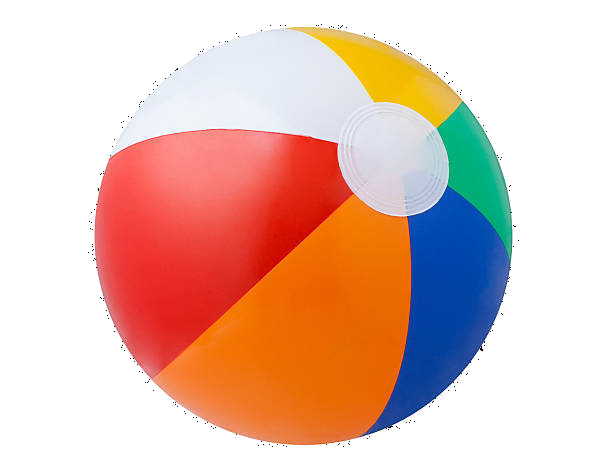

my challenge today was to switch it up with a bit more of a creative venture. so i did the day 2 js clock from js30 but i coded it my own way as well as really added my own sort of beach day flavor to the plain clock
added a beachball to the center, because without it, it is disorienting trying to read it as a watch as the swimmers don't face the same directions. so having that origin for reference add some necessary visual data that makes the face more eaily readable while maintaining no jutting clock arms
possible improvements: add slowly shifting proportional size to represent change in depth as waves come in and out, and slow asynchronous spinning and non-uniform translation as they revolve around the origin...however that would probably make the clock much more unreadable...but much more like a pool haha